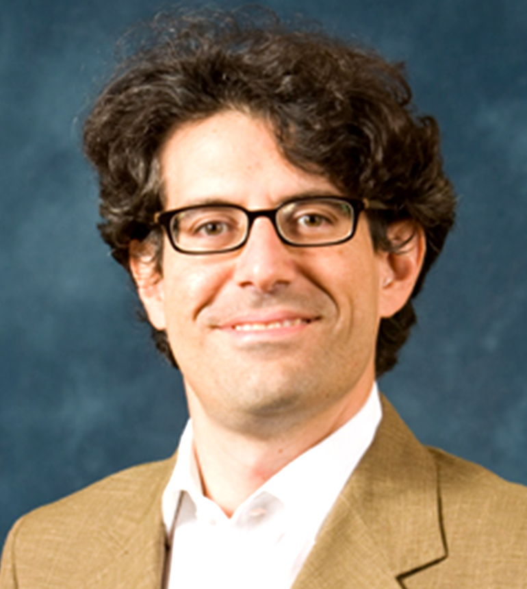

Faculty
-

ASSOCIATE PROFESSOR
DIRECTOR,
SAIL-TOYOTA CENTER FOR AI RESEARCH
COMPUTER SCIENCE DEPARTMENTOffice: Room 154 Gates Bldg
(650) 725-3860
ssilvio at stanford dot edu
-
(publishes under Li Fei-Fei)
ASSOCIATE PROFESSOR
DIRECTOR, STANFORD AI LAB
COMPUTER SCIENCE DEPARTMENTOffice: Room 246 Gates Bldg
(650) 725-3860
feifeili at cs dot stanford dot edu
-
 SENIOR RESEARCH SCIENTIST
SENIOR RESEARCH SCIENTIST
ASSOCIATE DIRECTOR,
SAIL-TOYOTA CENTER FOR AI RESEARCH
COMPUTER SCIENCE DEPARTMENTOffice:Room 243 Gates Bldg
(650) 725-3860
jniebles at cs dot stanford dot edu
Postdocs


Patrick Goebel
Postdoctoral Researcherpgoebel at stanford dot edu

Students


Damian Mrowca
PhD Candidate, Stanfordmrowca [at] stanford [dot] edu


Kuan Fang
PhD Candidate, Stanfordkuanfang at stanford dot edu

Kevin Chen
PhD Candidate, Stanfordkchen92 at stanford dot edu

Lyne P. Tchapmi
PhD Candidate, Stanfordlynetcha at stanford dot edu

Amir Sadeghian
PhD Candidate, Stanfordamirabs at stanford dot edu

Rachel Luo
PhD Candidate, Stanfordrsluo at stanford dot edu


Ajay Mandlekar
PhD Candidate, Stanfordamandlek at stanford dot edu


Lin Sun
Visiting Student, Stanford / PhD Candidate, HKUSTsunlin1 at stanford dot edu


Shyamal Buch
Master’s Student, Stanfordshyamal [at] cs [dot] stanford [dot] edu


Sasha Sax
Master’s Student, Stanfordasax at stanford dot edu


Julian Gao
Master’s Student, Stanfordjulianyg at stanford dot edu

Andrey Kurenkov
Master’s Student, Stanfordandreyk at stanford dot edu

Amani Peddada
Master's Student, Stanford CSamanivp at stanford dot edu

William Shen
Undergraduate Student, Stanfordbshen88 at stanford dot edu

Zhiyang He
Undergraduate Student, Stanfordhzyjerry at stanford dot edu

Barry Chai
Research AssistantVisiting / affiliated members
Shuran Song
Visiting ScholarLeo Keselman
Master's StudentJingwei Ji
PhD CandidateAlumni - Postdoc
Judy Hoffman
Postdoc, 2016-2017 Postdoc, BAIR, BerkeleyRoozbeh Mottaghi
Postdoc, 2013 - 2014 Research Scientist at Allen Institute for Artificial IntelligenceRoni Mittelman
Postdoc, 2011 - 2013Alumni - PhD
Sid Ying-Ze Bao
University of Michigan, ECE, PhD 2014 Research scientist at Magic LeapGaurav Pandey
University of Michigan, ECE, PhD, 2014 Assistant Professor at Indian Institute of Technology, IndiaMin Sun
PhD, 2013, University of Michigan, ECE Assistant Professor at National Tsing Hua UniversityJason Clemons
PhD 2013, University of Michigan, CSE Research scientist INTELMani Golparvar-Fard
University of Illinois, at Urbana-Champaign, CEE, PhD, 2010 Assistant professor at UIUCAlumni - Master Students
Yuanfang (Yolanda) Wang
MS, 2016-2018, CS, Stanford Master's student at Stanford UniversityTe-Lin Wu
MS, 2015-2017, CS, Stanford PhD student at University of Southern CaliforniaIan Tam
MS, 2015-2017, CS, Stanford Software engineer at Tableau SoftwareAlexandre Robicquet
MS, 2015-2017, CS, Stanford Research assistant on Jackrabbot project at Stanford UniversityChris Cruise
MS, 2015-2017, ME, Stanford ystems engineer in Autonomous Vehicles group at Ford Motor CompanyTsung-Chuan Chen
MS, 2014, EE, Stanford PhD student at Stanford UniversityVictor Escorcia
2014, Master’s Student, E.E., Universidad del NorteFabian Caba
2014, Master’s Student E.E., Universidad del NorteMaria Alejandra Davila
2014, Master’s Student E.E.Yu-Wei Chao
MS, 2011-2013, ECE, University of Michigan PhD student at University of MichiganChangkyu Song
MS, 2012-2013, ECE, University of Michigan PhD student at Rutgers UniversityShili Xu
MS, 2012-2013, ECE, University of Michigan Research scientist at QualcommWan Huang
MS, 2012-2013, ECE, University of Michigan PhD student at University of MichiganRyan Tokola
MS, 2010-2013, ECE, University of Michigan Research scientist at Oakridge National LabsMurali Telaporu
MS, 2011-2012, ECE, University of Michigan Research scientist at BloombergRyan Tokola
MS, 2010-2013, ECE, University of Michigan Research scientist at Oakridge National LabsMohit Bagra
MS, 2010-2012, ECE, University of Michigan Research scientist at MicrosoftShyam Kumar
MS, 2010-2011, ECE, University of Michigan Research scientist at AmazonKhuram Shahid
MS, 2008-2010, ECE, University of Michigan Research scientist at MicrosoftLiang Mei
MS, 2008-2010, ECE, University of Michigan Research scientist at MicrosoftParitosh Gupta
MS, 2008-2010, ECE, University of MichiganAndrey del Pozo
MS, 2006–2008, CS, UIUC Research scientist at AppleAlumni - Undergraduate
Amani Peddada
2014—present, Stanford Master’s student at Stanford CSBryan Anenberg
2014—present, Stanford Master’s student (coterm) at Stanford CSHelen Jiang
2015—present, StanfordJyno Kim
2011-2012, University of MichiganPast Visiting / Affiliated Members
Jorge Martínez
2016, Master’s E.E., Universidad del NorteDavid Altamar
2016, Master’s E.E., Universidad del NorteAshesh Jain
PhD, Cornell UniversityChenxia Wu
PhD, Cornell UniversityFrancesco Castaldo
PhD, SUN, ItalySam Corbett-Davies
PhD candidate, Stanford UniversityLaura Leal-Taixe
PhD, Institute for Information Processing (TNT), Leibniz University Hannover, GermanyGiorgio Gemignani
PhD, Department of Applied Science, University of Naples Parthenope, ItalyAxel Furlan
PhD, University of Milan - Bicocca, ItalyValeria Garro
PhD, University of Verona, ItalyRoberto Javier Lopez-Sastre
PhD, Dept. Signal Theory and Communications, U of AlcalaFaculty & Industry Collaborators
Ron Fedkiw
Professor, CS, StanfordOussama Khatib
Professor, CS, StanfordMartin Fischer
Professor, CEE, StanfordDeborah Gordon
Professor, Department of Biology, StanfordLeo Guibas
Professor, CS, StanfordLarry Davis
Professor, CS, UMDSebastian Thrun
Professor, Computer ScienceCaroline Pantofaru
Research Scientist, GoogleAlfred Hero
Professor, EECS, U-MichiganFeniosky Pena-Mora
Dean of The Fu Foundation School of Engineering and Applied Science at Columbia University.Min Sun
Bernard Ghanem
Alvaro Soto
Mani Golparvar-Fard
Luciano Sbaiz
Hrishikesh Aradhye
Chih-Wei (Louis) Chen
Bangpeng Yao
Andras Ferencz
Bohyung Han
Jia Li
Andrey Del Pozo
Hongcheng Wang